FUN WITH DIFFUSION MODELS!
Quang Nguyen, SID: 3036566521
Project Overview
In this project, I implemented and deployed diffusion models for image generation. In part A, I:
- Played around with diffusion models.
- Implemented diffusion sampling loops and used them for inpainting and creating optical illusions.
In part B, I trained my own unconditional, time-conditioned, and class-conditioned UNet-based diffusion model on MNIST.
PART A: THE POWER OF DIFFUSION MODELS!
0. Setup and Sampling from the Model
Throughout this part and the subsequent parts, the random seed that I used is 19722002.
Here are the stage 1 outputs:
an oil painting of a snowy mountain village

a man wearing a hat
a rocket ship
Here are the stage 2 outputs:
an oil painting of a snowy mountain village
a man wearing a hat
a rocket ship
For the prompt 'an oil painting of a snowy mountain village', the output image is pretty accurate: it illustrates an oil painting where the main subject is a village located on a snowy mountain. There are also two human figures walking in the middle of the image, probably due to the fact that the word 'village' is correlated/associated with human. Similarly, the prompt 'a man wearing a hat' also outputs a relevant image of a realistic man wearing a hat. The image is zoomed in to focus on the man's face and the hat; Interestingly, the man is also pointing to the hat, emphasizing the word 'hat' from the prompt. Despite having a rocket ship as the center, the output image for the prompt 'a rocket ship' is less accurate as the rocket ship looks too much like a cartoon and is not as realistic as one would expect from the prompt. All in all, 20 inference steps seem sufficient to generate outputs that are expected from the text prompts although there still exists some inaccuracies in the final images.
Here are the images from the prompt 'a man wearing a hat' with different number of inference steps:
Stage 1 outputs
num_inference_steps = 20
(default)
num_inference_steps = 10
(fewer steps)
num_inference_steps = 40
(more steps)
Stage 2 outputs
num_inference_steps = 20
(default)
num_inference_steps = 10
(fewer steps)
num_inference_steps = 40
(more steps)
For this prompt, we notice that the more number of inteference steps we have, the more zoomed and focused into the man's face wearing a hat the output image becomes. That is, when we only have 10 inference steps, the outputu does show a man with a hat but they are a little blurry, especially the left half of his face and the top of the hat. When we increase to 20 steps, the output becomes a half-body image that places more emphasis on the man but the hat is half-cropped. Finally, when we use 40 steps, the ouput is a portrait that fully focuses on the man's face and the hat is more defined.
Here are the images from the prompt 'a rocket ship' with different number of inference steps:
Stage 1 outputs
num_inference_steps = 20
(default/before)
num_inference_steps = 10
(fewer steps)
num_inference_steps = 40
(more steps)
Stage 2 outputs
num_inference_steps = 20
(default/before)
num_inference_steps = 10
(fewer steps)
num_inference_steps = 40
(more steps)
For this prompt, a similar trend also exists: using fewer inference steps produces output images that is less focused on the intended object/subject of the prompt. Another thing that we notice here is that when the number of inference steps is low, the resulting output is somewhat less realistic. That is, if we only use 10 steps, then the rocket ship is not fully drawn out (i.e. some details in the bottom are missing) and the image is not fully focused on the object (i.e. the ship is on the left of the image instead of being in the center). If we compare the output from using 20 steps and 40 steps, the 20-step result looks unrealisitic and cartoon-ish while the rocket and the fire from the thruster look significantly more representational and naturalistic.
1.1. Implementing the Forward Process
For this part, I obtained alpha_cumprod by indexing the given alphas_cumprod and epsilon using torch.rand_like. Here are the noisy versions of the test image at different timesteps:

Berkeley Campanile
Noisy Campanile at t=250
Noisy Campanile at t=500
Noisy Campanile at t=750
1.2. Classical Denoising
I applied Gaussian blur filtering with kernel_size=11 using torchvision.transforms.functional.gaussian_blur as an attempt to denoise the images. Here are the noisy images and their Gaussian-denoised verison shown together for comparison:
Noisy Campanile at t=250
Noisy Campanile at t=500
Noisy Campanile at t=750
Gaussian Blur Denoising at t=250
Gaussian Blur Denoising at t=500
Gaussian Blur Denoising at t=750
1.3. One-Step Denoising
To denoise with UNet, I first recreated the noisy images of different timesteps using the algorithm from 1.1. Then, I obtained the estimated noise from the UNet denoiser and use this to solve for the clean image by solving equation (2) for \(x_0\): (im_noisy - torch.sqrt(1 - alpha_cumprod)*noise_est)/torch.sqrt(alpha_cumprod). Here are the noisy images and their one-step denoised version shown together for comparison:
Noisy Campanile at t=250
Noisy Campanile at t=500
Noisy Campanile at t=750
One-Step Denoised Campanile at t=250
One-Step Denoised Campanile at t=500
One-Step Denoised Campanile at t=750
1.4. Iterative Denoising
Using strided_timesteps, a list of timesteps from 990 to 0 in steps of 30 and the formula \(x_{t^{'}}=\frac{\sqrt{\bar{\alpha_{t^{'}}}}\beta_t}{1-\bar{\alpha_t}}x_0 + \frac{\sqrt{\alpha_t}(1-\bar{\alpha_{t^{'}}})}{1-\bar{\alpha_t}}x_t + v_{\sigma}\) where \(x_0\) is the current estimate of the clean image just like in section 1.3, I implemented iterative_denoise function. Here is the noisy image every 5th loop of denoising:
Noisy Campanile at t=90
Noisy Campanile at t=240
Noisy Campanile at t=390
Noisy Campanile at t=540
Noisy Campanile at t=690
Here is the original image, the denoised image using iterative denoising, the predicted clean image using only a single denoising step, and the predicted clean image using gaussian blurring respectively:
Original
Iterative Denoised Campanile

One-Step Denoised Campanile
Gaussian Blurred Campanile
1.5. Diffusion Model Sampling
Using the same iterative_denoise function as part 1.4, I generated 5 sampled images by passing in i_start = 0, pure Gaussian noise as the input image, and the prompt "a high quality photo":
Sample 1

Sample 2
Sample 3
Sample 4
Sample 5
1.6. Classifier-Free Guidance (CFG)
To implement Classifier-Free Guidance, I add another argument for the iterative_denoise_cfg function that takes in a prompt for unconditional guidance. Rather than using the conditional noise estimate as the true noise estimate, I computed the true noise estimate using both a conditional and an unconditional noise estimate according to the formula \(\epsilon=\epsilon_u + \gamma(\epsilon_c - \epsilon_u)\), where \(\gamma\) controls the strength of CFG. Using "a high quality photo" as the conditional prompt, "" as the unconditional prompt, and \(\gamma=7\), I generated the following 5 samples:
Sample 1 with CFG
Sample 2 with CFG
Sample 3 with CFG
Sample 4 with CFG
Sample 5 with CFG
1.7. Image-to-image translation
To implement image-to-image translation, I added noise to a real image and then denoise it with iterative_denoise_cfg with the prompt "a high quality photo". Here are my results when the input image is the test image:
SDEdit of Campanile with i_start=1
SDEdit of Campanile with i_start=3
SDEdit of Campanile with i_start=5
SDEdit of Campanile with i_start=7
SDEdit of Campanile with i_start=10
SDEdit of Campanile with i_start=20

Original Campanile
Here are my results when the input image is an image of the Notre Dame Cathedral:
SDEdit of Notre Dame with i_start=1
SDEdit of Notre Dame with i_start=3
SDEdit of Notre Dame with i_start=5
SDEdit of Notre Dame with i_start=7
SDEdit of Notre Dame with i_start=10
SDEdit of Notre Dame with i_start=20
Original Notre Dame
Here are my results when the input image is an image of the Sydney Opera House:
SDEdit of Opera House with i_start=1
SDEdit of Opera House with i_start=3
SDEdit of Opera House with i_start=5
SDEdit of Opera House with i_start=7
SDEdit of Opera House with i_start=10
SDEdit of Opera House with i_start=20
Original Opera House
1.7.1. Editing Hand-Drawn and Web Images
In this part, I applied the function iterative_denoise_cfg to non-realistic and hand drawn images. For my displays, the first six images will be the generated ones while the last (the rightmost) image is the original/input image. Here is the result that I obtained from an image of a cat from the web:
Cat at i_start=1
Cat at i_start=3
Cat at i_start=5
Cat at i_start=7
Cat at i_start=10
Cat at i_start=20
Cat
Here is the result that I obtained from my own hand drawn image of a car:
Car at i_start=1
Car at i_start=3
Car at i_start=5
Car at i_start=7
Car at i_start=10
Car at i_start=20
Car
Here is the result that I obtained from my own hand drawn image of a house:
House at i_start=1
House at i_start=3
House at i_start=5
House at i_start=7
House at i_start=10

House at i_start=20

House
1.7.2. Inpainting
To implement inpaint, I modified the function iterative_denoise_cfg such that after obtaining \(x_t\) at every step, I forced \(x_t\) to have the same pixels as \(x_{orig}\) where the binary mask is 0, i.e. pred_prev_image = mask*pred_prev_image + (1-mask)*forward(original_image, t). Here is the inpainted test image of Campanile:

Campanile

Campanile Mask

Campanile Hole to Fill
Campanile Inpainted
Here is the inpainted image of somewhere with a lot of ice:
Penguin
Penguin Mask
Penguin Hole to Fill
Penguin Inpainted
Here is the inpainted image of somewhere with a lot of ice:
Painting
Painting Mask
Painting Hole to Fill
Painting Inpainted
1.7.3. Text-Conditional Image-to-image Translation
For this part, I applied the function iterative_denoise_cfg using a different text prompt from "a high quality photo". For my displays, the first six images will be the generated ones while the last (the rightmost) image is the original/input image. Using the test image of the Campanile and the prompt "a rocket ship", I obtained:
Rocket Ship at nosie level 1
Rocket Ship at nosie level 3
Rocket Ship at nosie level 5
Rocket Ship at nosie level 7
Rocket Ship at nosie level 10
Rocket Ship at nosie level 20

Campanile
Using an image of the Notre Dame Cathedral and the prompt "a prison building", I obtained:
Prison Building at nosie level 1
Prison Building at nosie level 3
Prison Building at nosie level 5
Prison Building at nosie level 7
Prison Building at nosie level 10
Prison Building at nosie level 20

Notre Dame Cathedral
Using an image of a painting in a museum and the prompt "a television", I obtained:
Television at nosie level 1
Television at nosie level 3
Television at nosie level 5
Television at nosie level 7
Television at nosie level 10
Television at nosie level 20
Painting in a Museum
1.8. Visual Anagrams
To implement the technique for creating visual anagrams from the spec, I applied the formula from the spec \(\epsilon = (\epsilon_1 + \epsilon_2)/2\) where \(\epsilon_1 = \text{UNet}(x_t, t, p_1)\) and \(\epsilon_1 = \text{flip}(\text{UNet}(\text{flip}(x_t), t, p_1)\)). I applied CFG to each of the generated noise prior to combining them. Using the prompts "an oil painting of people around a campfire" and "an oil painting of an old man", I created a visual anagram where on one orientation "an oil painting of people around a campfire" is displayed and, when flipped, "an oil painting of an old man" is displayed:
Using the prompts "a painting of a dog" and "a painting of a dorm room", I created a visual anagram where on one orientation "a painting of a dog" is displayed and, when flipped, "a painting of a dorm room" is displayed:
Using the prompts "an ink drawing of an old man" and "an ink drawing of a penguin", I created a visual anagram where on one orientation "an ink drawing of an old man" is displayed and, when flipped, "an ink drawing of a penguin" is displayed:
1.9. Hybrid Images
To implement the technique for creating hybrid images from the spec, I applied the formula from the spec \(\epsilon = f_{\text{lowpass}}(\epsilon_1) + f_{\text{highpass}}(\epsilon_2)\) to all three variables noise_est, uncond_noise_est, predicted_variance of the two prompts. I then applied CFG from previous part on the resulting noise_est, uncond_noise_est to obtain the predicted nosie that would be used to continue the diffusion process. For the Gaussian filter, I used kernel_size=33 and sigma=2. Using the prompts "a lithograph of a skull" and "a lithograph of waterfalls", I created an image that looks like a skull from far away but a waterfall from up close:
Using the prompts "a lithograph of a skull" and "a lithograph of flower arrangements", I created an image that looks like a skull from far away but an arrangement of flower from up close:
Using the prompts "a lithograph of a panda" and "a lithograph of flower arrangements", I created an image that looks like a panda from far away but an arrangement of flower from up close:
PART B: DIFFUSION MODELS FROM SCRATCH
1. Single-Step Denoising UNet/Unconditional UNet
Here are the results of adding Gaussian noise to a clean image \(x\) according to \(z = x + \sigma\epsilon\) where \(\epsilon ~ N(0, I)\) for different values of \(\sigma\):
\(\sigma=0.0\)

\(\sigma=0.2\)
\(\sigma=0.4\)
\(\sigma=0.5\)
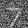\(\sigma=0.6\)
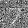\(\sigma=0.8\)
\(\sigma=1.0\)


Varying levels of noise on MNIST digits
I then implemented standard tensor operations and UNet according to figure 1 and figure 2 from the spec. Training the unconditional UNet on noisy images generated with \(\sigma=0.5\), I was able to yield the following loss curve over the entire training process:
Training Loss Curve
Here are the denoised results on the test set after 1 epoch of training and at the end of training:
Input

Noisy (\(\sigma=0.5\))
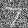Output
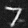

Results on digits from the test set after 1 epoch of training
Input

Noisy (\(\sigma=0.5\))

Output
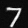


Results on digits from the test set after 5 epochs of training
For out-of-distribution testing, I attempted to use the trained unconditional UNet to denoise noisy images with \(\sigma \neq 0.5\). Here are the denoised results on test set digits with varying levels of noise \(\sigma\):
Noisy Image with (\(\sigma=0.0\))
Noisy Image with (\(\sigma=0.2\))
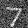Noisy Image with (\(\sigma=0.4\))
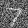Noisy Image with (\(\sigma=0.5\))

Noisy Image with (\(\sigma=0.6\))
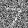Noisy Image with (\(\sigma=0.8\))
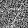Noisy Image with (\(\sigma=1.0\))
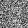Denoised Output
Denoised Output
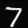Denoised Output
Denoised Output
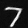Denoised Output
Denoised Output
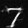Denoised Output

Results on digits from the test set with varying noise levels
2. Time-Conditioned UNet
I implemented the fully connected block and the injection of scalar \(t\) into our unconditional UNet model to condition it according to figure 8 and figure 9 from the spec. Training the time-conditioned UNet to predict the noise in a noisy image given an image and a timestep, I was able to yield the following loss curve over the entire training process:
Time-Conditioned UNet training loss curve
Here are the denoised results of the time-conditioned UNet after 1, 5, 10, 15, and 20 epochs of training:

Epoch 1

Epoch 5

Epoch 10

Epoch 15

Epoch 20
3. Class-Conditioned UNet
I implemented the injection of the class conditioning vector \(c\) into our time-conditioned UNet model to condition it according to the spec. I also implemented dropout where 10% of the time, the class conditioning vector \(c\) is set to 0 so our UNet would still work without being conditioned on the class. Training the class-conditioned UNet to predict the noise in a noisy image given an image, a timestep, and a label, I was able to yield the following loss curve over the entire training process:
Class-Conditioned UNet training loss curve
Here are the denoised results of the class-conditioned UNet after 1, 5, 10, 15, and 20 epochs of training:

Epoch 1

Epoch 5

Epoch 10

Epoch 15

Epoch 20